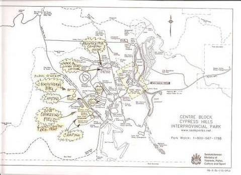
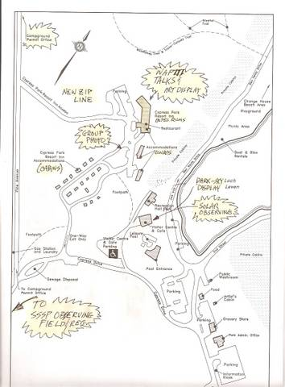
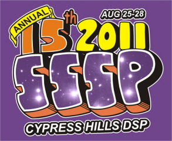

|
| Saskatchewan Summer Star Party 2011
Cypress Hills Interprovincial Park
August 25-28, 2011
Presented by the Saskatoon and Regina Centres
|
 |
- Important New Information
- Featured Guest Speaker
- Other Guest Speakers
- Registration
- Payment Options for American Guests
- Schedule of Events
- Cypress Observatory Ribbon Cutting
- Welcome BBQ
- Friday Sketching Workshop
- Saturday Banquet
- Starlight Café
- Kid's Activities
- Resort Accommodations
- Camping in the Park
- Park Entry Fees
- T-Shirts and More
- SSSP Pins
- Astrophoto and Sketching Contest
- SSSP Art Exhibition
- Door Prizes
- Lighting Issues and Etiquette
- Vendor On-Site Policy at SSSP
- Refund Policy
- Public Astronomy at SSSP
- The Beautiful Cypress Hills
- You Are Here
- In the Cypress Hills Area
- SSSP and the Dark-Sky Preserve
- SSSP 2012
- SSSP 2013
Aug 14 , 2011:
|
Aug 8 , 2011:
|
July 26 , 2011:
|
July 10, 2011:
|
May 25, 2011:
|
May 17, 2011:
|
April 23, 2011:
|
April 18, 2011:
|
March 27, 2011:
|
January 24, 2011:
|
Check back often for new developments. |
| We are pleased to announce our Featured Guest Speaker:
Check back often for new developments. |

| We are pleased to announce our other Guest Speakers:
Check back often for new developments. |


|
Early registration ended July 28. Late and At-The-Door registration rates are:
SSSP 2011 c/o Download the registration form. Check back often for new developments. |
Payment Options for American Guests
|
The SSSP cannot cash personal cheques drawn from American banks. Please pay choosing one of the following options: international money order, traveler's check (US$ or Can$), or pre-register by mail and tell us you will pay at the star party. Due to huge fees, the SSSP does not take credit or debit cards. Check back often for new developments. |
Come early and stay late if you choose. Most events take place in the
Resort's Wapiti Room (WR), the Baseball Diamond Observing Field (OF), the Park
Amphitheatre (PA) or the Dark-Sky Campground (DC).
Every day ends with viewing in the MC.
Check back often for new developments. |
Cypress Observatory Ribbon Cutting - Thursday 3:00 pm
|
Although the official name has not yet been chosen, the Cypress Hills Observatory will have a ribbon cutting ceremony on Thursday, August 25, at 3:00 pm. We expect Wayne Elhard, MLA for Cypress Hills, will be in attendance, and we hope the event will generate media interest in the observatory and the Dark-Sky Preserve. The ceremony and observatory project are organized by the Friends of Cypress Hills Park (FOCHP). Construction on the observatory and adjoining Yurt classroom will continue over the summer of 2011. Check back often for new developments. |
Welcome BBQ - Thursday 5:00 pm
|
This year, the Welcome Barbecue will be managed by the Friends of Cypress Hills Park (FOCHP) since they will be using it as a fundraiser. SSSP is collecting a $5 pre-payment for the BBQ as part of the registration, and will pass the money directly to FOCHP. The BBQ is currently planned to be held after the Cypress Observatory Ribbon Cutting at the Dark-Sky Campground, immediately NW of the Meadows. The BBQ should begin about 4:30 or 5:00 pm. Money from the BBQ will go toward the construction and maintenance of the observatory, so feel free to `overpay` for the BBQ or make a further donation at the BBQ. If you'd like to donate, otherwise, to the Observatory Project or participate in their Buy a Star program, visit the FOCHP website. Check back often for new developments. |
Sketching Workshop by Jack Milliken - Friday 10 pm
|
The SSSP sketching workshop will be held in the observing field and will consist of a brief discussion of tools, tips, and techniques used to sketch deep sky objects. Jack will show examples under red light to demonstrate the steps and techniques he uses to complete a sketch. Participants will then have an opportunity to try some sketching using a few telescopes that will be available at the workshop. Please note that artistic ability is NOT a requirement for attending the workshop. Astronomical sketching is mostly a means to capture what you see at the eyepiece and you will likely become a better observer even if no one ever sees the drawings but you. The extra attention needed to complete a drawing often allows one to see subtle details like foreground stars on galaxies, interesting concentrations or patterns of faint stars in open clusters etc. that may not be apparent with just a quick look at an object. Providing a detailed description of a target is also an important part of documenting what you observe and guidelines for describing different types of objects (open clusters, globular clusters, galaxies, etc.) will also be discussed. Sketching templates and a few sets of pencils and tools for use at the workshop will be provided. All you need to bring is a red light and a willingness to give sketching a try! Kathleen Houston of the Saskatoon Centre has written an article on sketching at the eyepiece that has been published in the Journal. You can find it here. Update:The workshop is now full and is not accepting any new participants. Due to the larger than anticipated demand, Jack Milliken will be assisted by Kathleen Houston. Participants will be organized into two groups working concurrently. Check back often for new developments. |
Saturday Banquet - Saturday 6:00 pm
|
The Resort catering staff will be serving the "Classic" single meat entree buffet. The banquet is served in the Wapiti Room. It starts at 6:00 pm Saturday. The menu includes: Italian Roasted Chicken; Roasted Potatoes; Pasta, Tossed, and Onion and Tomato Salads; Assorted Desserts; Coffee and Tea. Costs for the banquet are: Adults, $32; Youth 7-12 yr, $18; Children under 7 yr, free. Prices for the banquet have been adjusted from the 2010 prices due to increases passed to the SSSP by the Resort. Adult prices rise by $2 from $30 to $32, and youth prices rise by $4 from $14 to $18. On the upside, more kids will eat for free. The free banquet is now in place for kids ages 0 to 6 and paid-for banquets for kids now 7 - 12. Note that SSSP costs the banquet at a break-even pricing level. There are only 130 places for the banquet. They will be allocated on a "first registered, first allocated" basis. We strongly suggest that you preorder your tickets when you send in your registration. A limited number of places will be held for at-the-door registrations but only if the 130 place limit has not yet been exceeded. We also ask you, if you find that you are not able to come to the banquet but have preordered tickets, to contact us immediately. We will refund your banquet ticket costs and will allocate your tickets to people on our waiting list. If you do not contact us beforehand and you do not show up, your banquet ticket costs will NOT be refunded. See Refund Policy for more information. Update: The number of banquet places has been reduced from 160 to 130 due to reduced demand. However, there are still places available. Check back often for new developments. |
|
Jenn Petriew will lead a Kid's Workshop during the Saturday afternoon talks from 1:30 pm to 3:30 pm at a location near the Wapiti Room. The program is geared towards younger kids and will include crafts and games. This is a drop-in event, but you must sign your children in and out, and Jenn requests that a few parents help out, especially if they are not astronomers wanting to attend the talks. See your Handout in your Registration Kit for further details. Register at the Wapiti Room by 1:15 pm. Check back often for new developments. |
Starlight Café - Taking a Break for 2011?
|
Paul and Karen Petriew are taking a break from running the café in 2011 due to family commitments, so the SSSP is currently planning to provide hot coffee and tea after dark on Thursday, Friday and Saturday night at the registration tent. However, if anyone would like to run a café, please contact sssp.sk@sasktel.net. The Starlight Café should return in 2012. Check back often for new developments. |
|
Our room block at the Resort runs from Thursday through Saturday nights. The Resort has upgraded the hotel rooms. All rooms that had queen beds now have kings. All rooms that had two doubles now have two queens. They have new furniture. The resort hopes to have bar fridges in all the rooms soon and expanded Internet service. The rooms are NICE! All cabins except one have been renovated to be two- and three-bedroom cabins, though all cabins are full for 2011. Update: As of July 30, the rooms not yet booked in our Room Block were released back to the open pool. Any star party participants wishing to book a room after July 30 will have to compete for rooms with other guests on a first-come-first-served basis. Contact the Resort at 306-662-4477. Additional information about the Resort is available at their website: http://cpri.sasktelwebhosting.com// Check back often for new developments. |
Camping & the Location of the Observing Field for 2011 - IMPORTANT - READ THIS
|
MAIN OBSERVING at SSSP will be within the Ball Diamond area, one road before the old Meadows entrance. It is substantially the same size as the Meadows viewing area and still has a good south view. It also has a treed barrier to the road. It is nearer to the Sasktel tower but the tower lights are red (and currently only one of three lights is working!) There is NO power in the Aspen, Sunseet or Dark-Sky campsites, nor on the Ball Diamond. You must be self-sufficient for your power needs. The Campground Office will assign you a campsite in the Aspen, Sunset or Meadows campgrounds that surround the Ball Diamond. Alternately, you may ask them to camp you "in the open" in or around the Ball Diamond, if you prefer, away from a designated campsite, or in the Dark-sky campground, which is fairly far away from the main observing field. Note that the Ball Diamond is a big open field with no shade trees and no picnic tables. Aspen and Sunset are treed campsites with picnic tables a minute's walk away if you want to be cooler! We will allow camping in open areas if you want to be right next to your telescope, but only tents and smaller vehicles (cars), please, should occupy the grass within the central open area of the observing field. Please keep RVs and wheeled campers more to the (very large) periphery of the Ball Diamond so that line-of-site for observers can be maintained and damage to the grass field does not occur in case of wet weather. You may set your telescope up in the Ball Diamond for the weekend regardless of where you are camping. If you are not intending to stay the entire night at your telescope and have set up for the weekend, and are able-bodied, we suggest, as a courtesy, that you drive in, set up, then move your car to park at the entrance as not to disturb others as you exit. We are somewhat concerned for the safety of people and equipment, since the Ball Diamond does not have predetermined roads to guide night movement of vehicles, so please keep vehicle movement to a minimum. If unsure about where to set up, please see the Registration Tent, Road Security people or an SSSP organizer. Thank you for your cooperation. As in other years, unoccupied "equipment tents" are allowed at no cost, but you should pin a note to the tent stating it is an unoccupied equipment tent to avoid an argument in case Park staff check tenting permits...and it must be unoccupied! All SSSP participants are responsible for booking and paying for their own camp sites no matter where they camp. To do this, register with the Park Campground Office upon arrival at SSSP and get your camping permit and site number. All unpowered sites are RUSH this year, and cannot be pre-booked. If you have pre-booked one of the 24 - 30 powered sites, you will still have to show up at the campround office upon arrival to get your site number assignment. Remember to say you are "with the star party". Campgrounds: Sunset (~40 sites), Aspen (~40 sites), Meadows (only 30 powered sites by the road) and Dark Sky campgrounds (42 sites) are all reserved for SSSP campers from Aug. 23 through Aug. 29. Only the Reserve-a-Site sites (30 powered sites in Meadows) can be booked in advance on-line through the Provincial Parks website. These are the only powered sites, so we would encourage everyone who absolutely doesn't need a powered site not to take one. In order to get a pre-booked site, one MUST identify themselves as "with the star party" when booking. They can only be pre-booked for the star party on the star party dates. If you get a pre-booking, you will get a site, but you will not be assigned a site number until you arrive. If you book days outside of the star party dates, you may have to move sites. This is just how it is, don't complain, and please do not argue with the Campground people over this! At the time of this announcement (June 30), 10 of the 30 powered campsites have been reserved. We recommend that anyone who is in these sites that does not want lots of white lights (cars) driving by (especially during the public star party hours), set up in the ball diamond with the rest of the group. There are no tree barriers to lights in the Meadows camping sites, and there will be many cars coming and going from the public star nights now held at the Dark-Sky Campground between 9:00 and 11:00 pm on Friday and Saturday. White light will not be a problem on the Ball Diamond. All other campsites (for tents and trailers) in Sunset, Aspen and Dark-Sky campgrounds are RUSH and cannot be pre-booked on the web-site. They can be booked upon arrival at the star party, and only star party people will be put into these sites. There is ample room for everyone who will camp at the star party. Because some campsites are closer to the observing field, we will recommend that the campground office fill Sunset and Aspen first, and Dark-Sky last, since Dark-Sky is about 1/2 km from the observing field. No sites have power, but all campsites have picnic tables and fire-pits except for 14 new Dark-Sky overflow sites (#29 - #42) that have only picnic tables. We recommend that if people want to come before or stay after the star party, that they book into the Dark Sky Campground, because it is DARK, and then move into the other campground for the star party dates. We cannot guarantee that Meadows lights will be off anymore outside of star party days, especially in years going forward. Meadows Campground (except for 30 sites) will be closed for the duration of 2011 for renovations to install new pull-through camper sites. This means that the 108 powered sites will be completed and a service centre with flush toilets and showers will be built before the Meadows reopens in 2012. Please be patient for this year, since next year we'll be living in luxury! We have provided below two maps showing the venues for SSSP 2011 within the Park.  
To obtain further information about the park, visit their website at: http://www.tpcs.gov.sk.ca/CypressHills.
Check back often for new developments. |
|
The SSSP is held in a provincial park, thus provincial park entry fees apply to your stay.
Pay at the park gate as you enter. Current Saskatchewan park fees are available at:http://www.tpcs.gov.sk.ca/fees. Check back often for new developments. |
Shirt prices are as follows:
The logo design is shown below.  Check back often for new developments. |
|
SSSP pins commemorate the ribbon cutting for the Cypress Hills Observatory at the Dark-Sky campground and the first complete orbit of Neptune since its discovery (Neptune's "First Sol"). You may see the pins around before SSSP this year, since we have an agreement with the Friends of Cypress Hills Park to sell them at the park gift shop over the summer as a fund-raiser for the observatory project. The pin was designed by Kathleen Houston. Pin prices are as follows:
The pin design is shown below.
Check back often for new developments. |

Astrophoto and Sketching Contest
|
The categories are listed below:
Two special prizes will also be awarded:
We are pleased to announce that Debra Ceravolo has agreed to judge the Astrophoto Contest. Check back often for new developments. |
We wish to display astronomically inspired quilts and artwork in the Wapiti Room during the star party. All media are welcome including;
Check back often for new developments. |
The major door prizes are awarded by drawing names out of a container. The following rules apply to the major door prize awards. These rules will be strictly followed.
|
|
|
Check back often for new developments. |
|
The SSSP is a Red-Light Only Zone from sundown to sun-up. We are not unique: all star parties insist on no white lights to preserve night vision for participants. If you are a new attendee or do not understand these regulations, ask a star party organizer for assistance. White light flashlights are NOT allowed! Use only red filtered flashlights, and keep them as dim as possible. Please make sure to have your car parked in its final resting position well before darkness sets in. If you do not intend to remain in the Observing Field all night long, park and set up near to the entrance so you can leave without blinding everybody! Cars are to use their park-lights only, or be lead with their lights off by someone with a red flashlight. (This is not advised for safety reasons and to be used only in an emergency). Gate security people will have a limited supply of red flags to cover car lights. Cover the following lights: interior, back-up, license plate, trunk and headlights. Gate security people will tape red flags your vehicle lights at the gate as you arrive. Please cover windows on RVs as not to accidentally have a family member flash the crowd with white light. The most common offending light issues with vehicles are interior dome lights and uncovered backup lights coming on unexpectedly. Red and green lasers are permitted. Do not point them horizontally at people or trailers! Lasers will not show on astrophotos unless they are held in the same place for many seconds. Use them sparingly. Lasers will be used extensively during the scheduled starwalks from 10:00 p.m. to 11:00 p.m Friday and Saturday night. Check back often for new developments. |
|
The SSSP Committee welcomes astronomy (and related) dealers to set up booths at the SSSP. At this event you have the potential to reach nearly 300 astronomy enthusiasts just looking to buy something. To participate, you are asked to follow the standard registration procedure - i.e. vendors must register as normal participants at the normal costs for the star party. You may in turn sell and conduct normal business within the Observing Field (but due to Park restrictions cannot solicit elsewhere in the park.) The SSSP is not responsible for any of the vendor's business costs (transportation, accommodation, living, etc.) Vendors are responsible for their own arrangements, park entry and must pay standard camping fees (to the Park) and camp site power if needed, if staying in the Meadows. The SSSP is not responsible for any merchandise loss or damage. As registered SSSP star party goers, all vendors are welcome to participate in all activities they have registered for. If you would like to donate a door prize, this will be graciously accepted & will be accordingly acknowledged, though a door prize donation is not required and is at the discretion of the vendor. Vendors will receive a free 1/4-page ad in the star party handout literature or for $25 can purchase a full-page ad. (Ads in the SSSP handout are gray-scale photocopied and are not in colour). Alternately, the SSSP will pre-package vendor-supplied product brochures in our registration folders for 25 cents per copy. Approximately 120 registration packages are handed out. Vendor must provide the ad or the product brochures at least 2 weeks prior to the star party. (Mail to or contact the Registrars). In a further attempt to foster this on-going good will, all star party vendors will be entitled to two separate half-page ads (or equivalent - e.g. four 1/4-page ads) in our monthly newsletter, over the coming year. These ads are at no additional cost. Our current newsletter circulation is approximately 80 copies, but these are highly targeted readers & the newsletters are also on-line. All ads are subject to approval by the Saskatoon Centre Executive before inclusion in the newsletter. We will do our best to publish the ad in the month desired, but this is also subject to available space within the newsletter. Check back often for new developments. |
|
The SSSP will offer complete refunds for registration costs and prepaid activities, without a handling fee, to participants who wish to withdraw from the SSSP prior to the start of the star party and for no-show participants except as follows. SSSP cannot refund the prepaid banquet costs within 48-hours of the banquet (ie. after 5:00 p.m. on the preceding Thursday) since the SSSP locks in their banquet costs to the Resort at that time. If shirts are pre-ordered, the SSSP may not be able to cancel shirt orders within 3 weeks of the star party. If possible, refunds for shirts will be made, but if cancellation is not possible, shirts will be mailed out at the withdrawing participant's cost after the star party. No shows are defined as those who have not registered by the end of registration period on the Saturday afternoon of the star party. However, banquet tickets are always in demand right up to the starting minute of the banquet! There is almost always a waiting list since banquet seating space is limited. If you have not made previous arrangements and find that at the last minute you cannot come to the star party or cannot attend the banquet, please telephone us at 306-280-9836 (star party cell) and let us know if you will release your banquet tickets for resale. If we can resell your banquet tickets, we will refund the entire cost to you, even within the 48-hour no-refund window. Someone at the star party will be delighted that you thought of them! Otherwise, your tickets will be held for you assuming you will show up at the last minute and are thus not otherwise refundable. Check back often for new developments. |
Public Astronomy Events During SSSP
|
In celebration of the Cypress Hills Dark-Sky Preserve, the SSSP hosts three public events during the star party, as public outreach is a mandate of the RASC and of the DSP agreement. The events are co-sponsored and co-staffed by the Regina Centre, Saskatoon Centre and the Cypress Hills Inter-provincial Park. These events are advertized in the park and in all communities within a 150 kilometer radius of the Park. The Living Skies Public Lecture is held on Thursday evening at the Amphitheatre, and is open to SSSP attendees and the general public. Typical attendance ranges from 200 to 350. Solar Observing is held at the park entrance area near the Swimming Pool on Friday at 11 am, over the lunch hour. Public Star Nights begin at dusk on Friday and Saturday nights at the Dark-Sky Campground near the Cypress Observatory, and is hosted by the Regina Centre. The star parties draw 150 to 250 nightly. SSSP attendees are highly encouraged to attend these events or to volunteer to help out, as they are fun and educational. Here is a poster with further details. Check back often for new developments. |
|
If you have not been to the Cypress Hills Inter-provincial Park,
you are missing something! This is a beautiful park, nested in
Lodgepole pines on a butte that reaches 1460 meters above sea level,
and is the highest point in Canada between the Rockies and Labrador.
(Because of the altitude - bring warm clothes for night time!) Its
unique position gives it an unusual weather advantage. Historical
weather maps published by Jay Anderson in the RASC Observer's
Handbook indicate that the area around Cypress Hills has the best
chance for clear skies (less than 30 percent mean nighttime cloud
cover) in July and August compared to any other site in Canada. Also,
no mosquitos! The park is very modern and well equipped for families of tired astronomers. The park features a lake, hiking trails, paddle boats, mini golf, regular golf, a general store, a full resort, two restaurants, an ice-cream and snack shop, a souvenir shop, moose and other varmints, ball diamonds, picnic grounds, tennis courts, an outdoor heated pool, hot tub, a museum and of course, the SSSP! A new facility in the Park this year includes a tree-top zipline and climbing wall. The zipline is located in the woods just before the Resort. More on the park is found at: http://www.cypresshills.com/index.php?id=44.
SSSP and the Dark-Sky Preserve
|